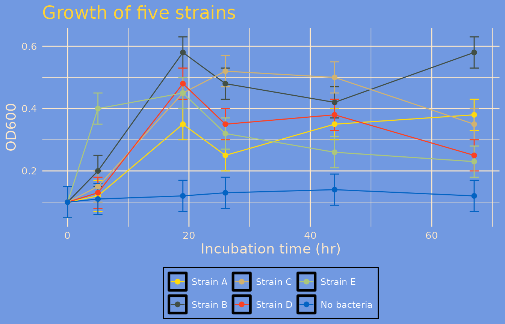
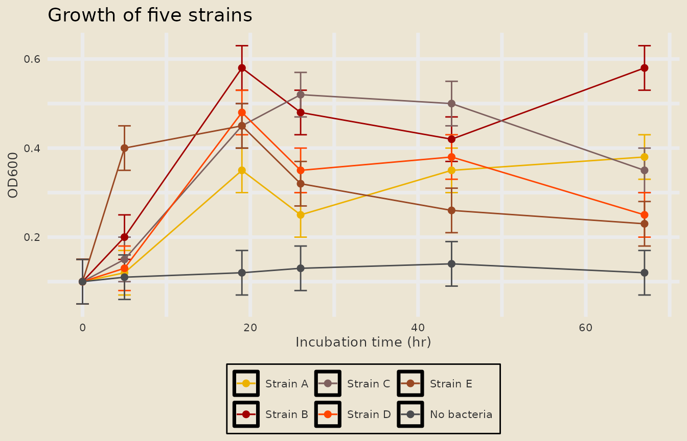
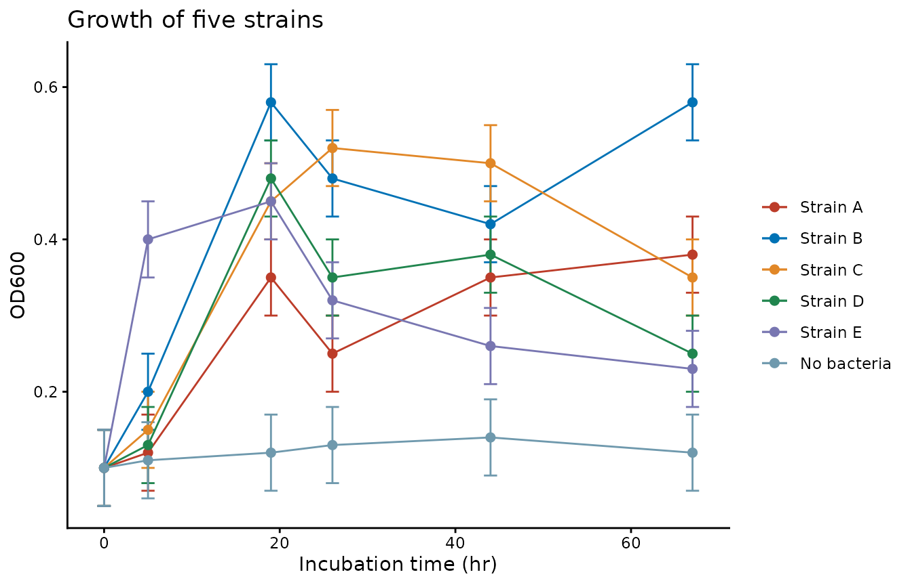
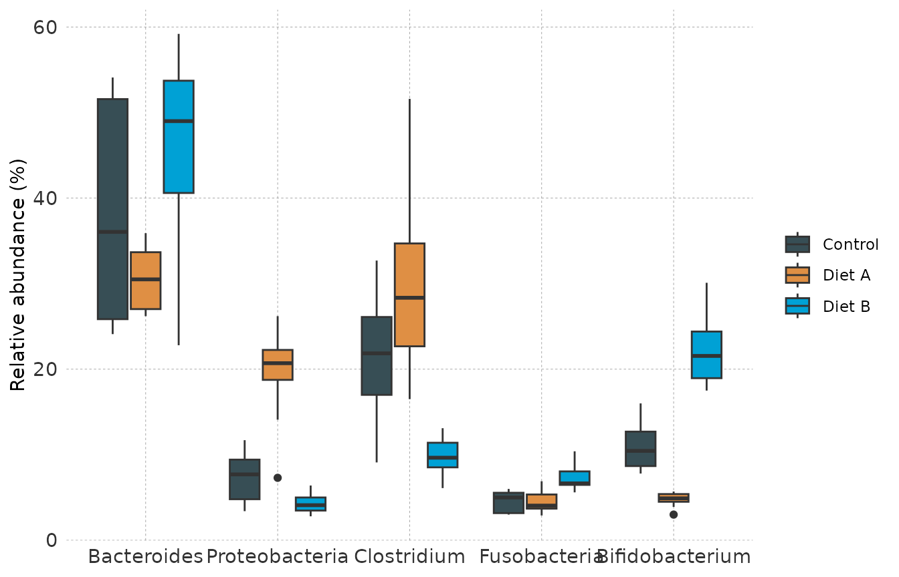
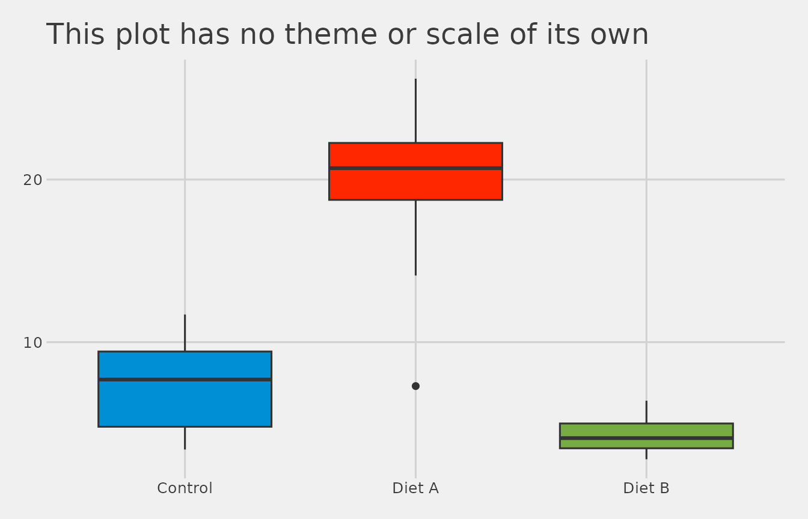

Overview
A theme set is a ggplot2 theme bundled with the
discrete color and fill scales that go with it. themeset
ships 49 of them under short names such as "simpsons",
"nejm" or "minimal", and a few functions to
apply a set to one plot or to every plot in your session.
Fourteen sets carry their own scales:
-
simpsons,avatar,olinkandfivethirtyeight - eight journal sets,
npg,aaas,nejm,lancet,jama,jco,bmjandfrontiers, which pair the classic theme with a journal palette -
flexoki_lightandflexoki_dark
The other 35 change only the theme.
The pieces are also exported on their own, so you can mix and match:
- discrete color and fill scales (
scale_color_npg(),scale_fill_jama(), …), and any palette by name withscale_color_set("nejm") - markdown-enabled versions of the base ggplot2 themes
(
md_theme_minimal(), …) - a few custom themes (
theme_nyt(),theme_midnight(), …) - templates of journals, with their figure widths, text sizes, panel
tags and palettes, to compare one figure in several journals
(
compare_journals())
This vignette is a short tour. The other articles go deeper: Theme Sets and Color Scales, Markdown-Enabled Themes, Global and Custom Themes, A Multi-Panel Figure, Comparing Figures Across Journals, A Gallery of Figure Types, A Showcase of Themes and Colors, A Figure Set for a Reanalysis and A Figure Set for a Reporting Study.
Example Data
The examples use two small simulated data sets that come with the
package as code, so there are no data files.
example_growth() is a growth experiment: five bacterial
strains and an uninoculated control, followed over 67 hours and measured
four ways. example_taxa() compares the relative abundance
of five taxa in three conditions.
head(example_growth(), 3)
#> time strain measure value se
#> 1 0 Strain A Product A (uM) 0 0.0
#> 2 5 Strain A Product A (uM) 0 0.0
#> 3 19 Strain A Product A (uM) 10 1.5
head(example_taxa(), 3)
#> taxon condition abundance
#> 1 Bacteroides Control 51.1
#> 2 Bacteroides Control 45.1
#> 3 Bacteroides Control 25.7Function Reference
| Category | Function | Description |
|---|---|---|
| Theme sets | apply_theme_set() |
Add a set’s theme, color scale and fill scale to one plot |
set_global_theme() |
Make a set the default for every plot in the session | |
reset_global_theme() |
Go back to ggplot2’s default theme and palettes | |
list_theme_sets() |
Print the names of the 49 available sets | |
| Color scales |
scale_color_npg(), scale_fill_npg()
|
Discrete scales; also jama, avatar,
simpsons, olink and
fivethirtyeight
|
scale_color_set(), scale_fill_set()
|
Discrete scales picked by name, for example "nejm" or
"wesanderson::Darjeeling1"
|
|
list_color_scales() |
Print the names of the color scale sets | |
| Themes |
md_theme_minimal() and seven more |
Markdown-enabled versions of the base ggplot2 themes |
theme_nyt() |
Minimal theme with dashed gridlines and bold titles | |
theme_midnight(), theme_royal(),
theme_deepblue()
|
Dark themes | |
| Journal figures | journal_templates() |
The column widths, text sizes, panel tags and palettes of 13 journals |
apply_journal(), journal_theme()
|
Add the theme and the palette of a journal to a plot | |
compare_journals() |
Draw one figure in several journals, side by side and to scale | |
journal_check() |
Check a figure against the text and line limits of a journal | |
save_journal_figure() |
Save a figure at the width of a column of a journal | |
journal_colors(), journal_ramp(),
compare_palettes()
|
The colors of a journal, shades for ordered groups, and how well palettes keep colors apart | |
| Example data |
example_growth(), example_taxa()
|
Simulated growth curves and taxon abundances |
1. Quick Start
apply_theme_set() takes a plot and the name of a set.
The plot shows the optical density of five strains and an uninoculated
control over time:
od <- subset(example_growth(), measure == "OD600")
p <- ggplot(od, aes(time, value, color = strain)) +
geom_errorbar(aes(ymin = value - se, ymax = value + se), width = 1.5) +
geom_line() +
geom_point(size = 2) +
labs(title = "Growth of five strains", x = "Incubation time (hr)", y = "OD600", color = NULL)
apply_theme_set(p, "simpsons")
The theme, the color scale and the fill scale of the
simpsons set were all added to p. The result
is an ordinary ggplot object, so you can keep adding layers to it or
save it with ggsave().
Change the name to change the whole look:
apply_theme_set(p, "avatar")
A journal set pairs the classic theme, which suits a paper, with the palette of a journal:
apply_theme_set(p, "nejm")
An unknown name is an error that points back to the list of sets:
apply_theme_set(p, "nope")
#> Error: Set 'nope' not found. Run list_theme_sets() for available options.2. Browsing the Available Sets
list_theme_sets()
#> Available theme sets:
#> [1] "simpsons" "avatar" "olink" "fivethirtyeight"
#> [5] "npg" "aaas" "nejm" "lancet"
#> [9] "jama" "jco" "bmj" "frontiers"
#> [13] "flexoki_light" "flexoki_dark" "nyt" "midnight"
#> [17] "royal" "deepblue" "bw" "classic"
#> [21] "dark" "light" "linedraw" "minimal"
#> [25] "base" "calc" "clean" "economist"
#> [29] "economist_white" "excel" "excel_new" "few"
#> [33] "foundation" "gdocs" "hc" "igray"
#> [37] "map_gg" "pander" "par" "solarized"
#> [41] "solarized_2" "solid" "stata" "tufte"
#> [45] "wsj" "ipsum" "ipsum_rc" "cowplot"
#> [49] "minimal_grid"The first fourteen are the complete sets. Every other name selects a theme only. The Theme Sets and Color Scales article shows what they look like and which package each one comes from.
The color scales can be listed too:
list_color_scales()
#> Available color scale sets:
#> tvthemes: avatar, simpsons
#> OlinkAnalyze: olink
#> ggthemes: fivethirtyeight
#> ggsci: aaas, atlassian, bmj, cosmic, d3, flatui, frontiers, futurama, gephi,
#> igv, iterm, jama, jco, lancet, locuszoom, nejm, npg, observable, primer,
#> rickandmorty, startrek, tron, uchicago, ucscgb
#> flexoki: flexoki_light, flexoki_dark
#> grDevices: okabe_ito
#> wesanderson (use as wesanderson::<name>): BottleRocket1, BottleRocket2,
#> Rushmore1, Rushmore, Royal1, Royal2, Zissou1, Darjeeling1, Darjeeling2,
#> Chevalier1, FantasticFox1, Moonrise1, Moonrise2, Moonrise3, Cavalcanti1,
#> GrandBudapest1, GrandBudapest2, IsleofDogs1, IsleofDogs2, FrenchDispatch,
#> AsteroidCity1, AsteroidCity2, AsteroidCity3
#> biopalette (use as biopalette::<name>): gene_red, heat_light, three_body,
#> lactate_steps, walter_white2, tam_pastel, bcell_atlas, cancer_mosaic,
#> bcell_clusters, babel
#> ggpalettes (use as ggpalettes::<name>): meadow, atelier, clinical, spectrum,
#> pastel, earth, midnight, floral, coastal, harvest3. Using Themes and Scales Separately
Nothing forces you to go through a set. Themes and scales are ordinary ggplot2 components and can be combined freely:
taxa <- example_taxa()
ggplot(taxa, aes(taxon, abundance, fill = condition)) +
geom_boxplot() +
labs(x = NULL, y = "Relative abundance (%)", fill = NULL) +
theme_nyt() +
scale_fill_jama()
4. Setting a Theme for the Whole Session
set_global_theme() makes a set the default. Plots
created afterwards use its theme and, for sets that have scales, its
colors, without any extra code:
set_global_theme("fivethirtyeight")
ggplot(subset(taxa, taxon == "Proteobacteria"), aes(condition, abundance, fill = condition)) +
geom_boxplot(show.legend = FALSE) +
labs(title = "This plot has no theme or scale of its own", x = NULL, y = "Relative abundance (%)")
reset_global_theme() returns to ggplot2’s defaults:
The Global and Custom Themes article covers what exactly is changed, and the limits of the global palettes.